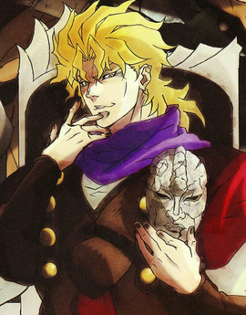
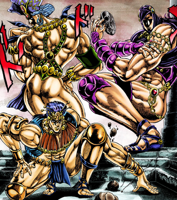
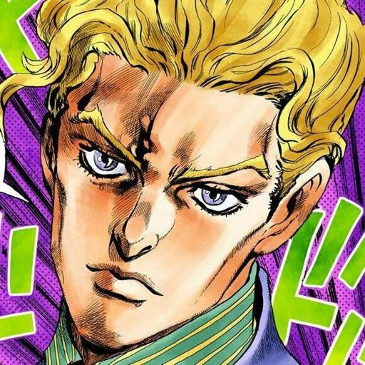
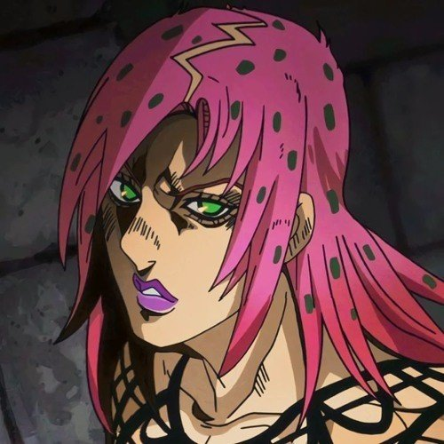

VILLANOS
Brando (part 1 - 3)
Dio Brando (ディオ・ブランドー, Dio Burandō?), llamado simplemente DIO (ＤＩＯディオ,?) a partir de la Parte 3
en adelante, es el antagonista principal de la Parte 1: Phantom Blood y la Parte 3: Stardust Crusaders.
También es un personaje póstumo en Stone Ocean siendo el responsable del ascenso de Enrico Pucci a la villanía.
Originalmente de nacimiento un hombre de bajos recursos, pero de ambición incomparable,
Dio es un villano de poca conciencia, gran astucia, y un hambre insaciable de poder.
Es el padre de Giorno Giovanna, el protagonista de la Parte 5: Vento Aureo, así como unos cuantos
otros hijos ilegítimos. Como antagonista dominante de JoJo's Bizarre Adventure, su legado persiste
a lo largo de la historia.
Los hombres del pilar
Los Hombres del Pilar (柱の男, hashira no otoko?) son cuatro humanoides poderosos los cuales son los
principales antagonistas de la Parte 2: Battle Tendency.
Kira Yoshikage
Yoshikage Kira (吉良 吉影, Kira Yoshikage?) es el antagonista principal de Diamond Is Unbreakable.
Es un asesino en serie "parafílico" comprometido a defender su ininterrumpido estilo de vida que
durante años ha aterrorizado la tranquilidad del pueblo de Morioh. Habiendo permanecido impune durante
s, todo cambia cuando el Fantasma de su primera víctima, Reimi Sugimoto le pide ayuda a los miembros de la
lia Joestar para que lo encuentren después de que asesinara al estudiante Shigekiyo Yangu llamando la
atención de manera innecesaria.
Su Stand es "Killer Queen" con el cual puede crear bombas extremadamente mortales.
Diavolo
Diavolo (ディアボロ, Diaboro?) es el antagonista principal de Vento Aureo.
Como descubridor de las Flechas, él es el responsable de la reciente proliferación de Usuarios de Stand en el mundo. Viviendo una vida extremadamente reservada como alguien que busca permanecer en la clandestinidad, es el máximo líder del sindicato de crimen organizado llamado Passione, que corrompe a Italia con el tráfico de drogas en las calles, lo que lo convierte en el enemigo superior y más grande de Giorno y Bruno.
Debido a su obsesión por esconder su identidad, prácticamente nadie conoce su pasado o su apariencia real. Él también es el padre de Trish, y le ordena a la Pandilla de Bucciarati que la traigan ante su presencia mientras la mantienen a salvo de La Squadra di Esecuzione, un grupo especializado en asesinatos que traicionó a la organización.
Secretamente tiene una personalidad alternativa, y es un usuario de Stand que maneja al increíblemente poderoso King Crimson.